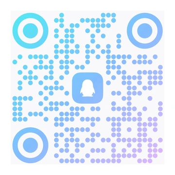
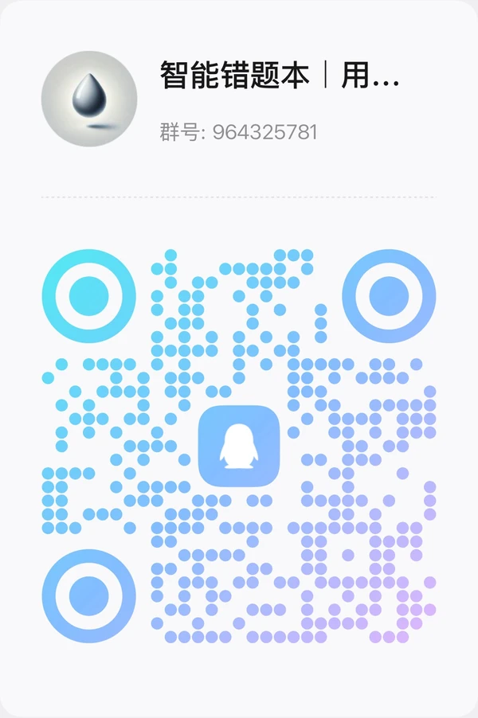

Abstract steps,
made clear at a glance.
AI turns the solution into a step-by-step SVG animation,
in English or Chinese to match the interface.
Pause, seek and replay at your own pace.
A fresh start for every mistake
Saving a mistake is only the first step.
AI helps you see why it went wrong and practice more like it,
so "I've done this" becomes "I've got this".
Demo account demo@localhost / demo123456 · Shared data, please don't enter personal information

QQ user group964325781Scan with QQ to join (mainly Chinese)Real app · English questions and interface · Click to enlarge
Built for steady learning
Primary · Middle · High school Choose your AI provider Desktop · NAS · ServerPWA Opens like an appA LITTLE MISTAKE. A BIG STEP FORWARD.
Spend less time copying questions out by hand and more time actually understanding them.
Snap a photo, paste a screenshot or type the question. AI recognizes it and sorts out the answer, analysis and knowledge points.
Less busyworkReview the cause of the mistake and the solution, with SVG animations that make abstract steps easy to follow.
More "aha" momentsGenerate variant questions on the same knowledge point at the difficulty you choose, and check that you really understand.
From memorizing to masteringEvery attempt is kept and mastery is tracked, so you can turn the questions that need work into an exam.
Focus your next reviewTHOUGHTFUL TOOLS, REAL UNDERSTANDING
From the details of one question to your whole web of knowledge,
the tools you need for learning, in one place.
AI turns the solution into a step-by-step SVG animation,
in English or Chinese to match the interface.
Pause, seek and replay at your own pace.
Generate fill-in-the-blank or free-response questions on the same knowledge point, at the difficulty you choose, to strengthen old weak spots with new problems.
Answers written the same way are marked correct right away; anything else is checked by AI against the reference answer, with a reason.
Knowledge points are organized by school stage, subject and chapter. AI tags questions automatically, and you can add your own tags.
Build exams by knowledge point and mastery. Include answers and analyses if you like, then print or save as PDF.
Reviews are spaced 1, 2, 4, 7, 15 and 30 days apart, and Today's Review lists what is due;
mastery is estimated from your actual answer history to find what's next.
A CLOSER LOOK
Captured from the running app with English demo questions and sample study records.
Pick a tab to see each step.
Filter by knowledge point, grade, mastery and A/B paper to quickly find the questions you need to review.
Running app · English demo dataYOUR NOTEBOOK, YOUR SPACE
Desktop apps for Windows, macOS and Linux work out of the box;
fnOS, npm and Docker run it on a NAS or server.
Bring the AI provider you know and build your own notebook.
The SQLite database stays on your machine. Export a backup
and restore questions, practice records, exams and preferences.
Works with a free MiniMax account: sign in to MiniMax Code,
check in daily for credits, and AI features use free credits;
MiniMax, Zhipu GLM, DeepSeek, Kimi, Anthropic, Azure OpenAI,
OpenAI, Gemini and compatible APIs are also supported.
Install it as a PWA on your phone or tablet home screen;
the standalone Android app needs no server and keeps data on the device.
# 1. Create data and config directories
mkdir -p wrong-notebook/data wrong-notebook/config
cd wrong-notebook
# 2. Pull and start; data stays in the mounted directories
docker run -d --name wrong-notebook \
--restart unless-stopped -p 3000:3000 \
-e NEXTAUTH_SECRET="$(openssl rand -hex 32)" \
-v "$(pwd)/data:/app/data" \
-v "$(pwd)/config:/app/config" \
ghcr.io/margrop/wrong-notebook:latesthttp://localhost:3000WrongNotebook-Win-Setup-version-x64.exe, or the Portable build-arm64.dmg, Intel -x64.dmg; on first launch, right-click and choose Open.AppImage and .deb for x86_64 / arm64.fpk manually; open port 39300 on your LAN-Android-Phone-version.apk, tablet -Android-Tablet-version.apk, with the server built in; client -Android-Client-Phone/Tablet-version.apk connects to your own servernpm install -g wrong-notebook
# Data is stored in ~/.wrong-notebook by default
wrong-notebook --port 3000http://localhost:3000git clone https://github.com/margrop/wrong-notebook.git
cd wrong-notebook
npm ci
cp .env.example .env
# Edit .env first: set NEXTAUTH_SECRET and AI settings
# Initialize database, accounts and knowledge points
npx prisma migrate dev
npx prisma db seed
npx ts-node --compiler-options '{"module":"CommonJS"}' \
scripts/rebuild-system-tags.ts
npm run devhttp://localhost:3000The default admin is admin@localhost / 123456. The first sign-in opens a setup wizard that has you change the default password, set up an AI provider and create your first notebook. Images are published at ghcr.io/margrop/wrong-notebook; pin a version with tags such as 2026.10.22. See the setup guide for upgrades, Docker Compose and data directories of each installer.
GOOD QUESTIONS
More questions? Join the discussion on GitHub or in our QQ group.
Report an issue or suggestion
QQ user group964325781Scan with QQ to join. Conversations are mainly in Chinese. Click to enlarge.The project is free and open source under the MIT License, with source code, a Docker image, an npm package and installers for every platform to host yourself. AI features such as recognition and explanations need your own AI provider, which charges for usage; official MiniMax, Zhipu GLM, DeepSeek and Kimi channels are built in, you can sign in to MiniMax Code with a free MiniMax account in the browser (no API key; the app checks in daily for credits and AI features use the free credits), and services with OpenAI- or Anthropic-compatible APIs work too.
Yes. Choose "MiniMax Code OAuth" in the settings and sign in with a free MiniMax account in the browser to use MiniMax-M3.1-Flash. The app checks in every day to collect credits, AI features such as recognition, explanations and practice use the account's free credits, and the remaining credits are shown on the settings page.
Yes. Open the live demo and sign in with demo@localhost and password demo123456. The demo account is shared and its data is visible to all visitors, so please don't enter personal information. For real use, host your own instance.
The server runs as a desktop app on Windows, macOS and Linux, on fnOS NAS, and on any server with Docker or Node.js. Once it's running, use it from a browser on your phone, tablet or computer. The desktop app accepts local connections only; fnOS, npm and Docker setups can be reached across your LAN.
Each notebook is created for primary, middle or high school and a subject. The built-in knowledge points follow the Chinese K-12 curriculum and are organized by school stage and subject; custom tags are supported, and AI helps identify knowledge points and difficulty.
Yes. The interface is available in Simplified Chinese and English, and AI can recognize and explain questions in either language. The built-in knowledge-point library and most documentation are in Chinese.
Yes. It works in browsers on phones, tablets and computers, and supports PWA. Choose "Add to Home Screen" from the Share menu in Safari on iPhone / iPad, or from the Chrome menu on Android, to open it like an app. On Android you can also install an APK from Releases: the standalone app has the server built in and keeps data on the device, while the client connects to your own server. Both support taking photos for upload, saving exports and system printing.
Questions and answer records are stored in a SQLite database on your own deployment, and so are AI settings. AI recognition, solving and generation send the relevant content to the AI service you configured, which must be reachable; PWA support does not mean fully offline use.
This website is hosted on GitHub Pages. The notebook app includes sign-in, a database and AI APIs, so it needs a running server: install the desktop app or the fnOS package, or deploy with npm or Docker to a computer, NAS or server. To see it first, try the live demo.
This project extends wttwins/wrong-notebook with bilingual SVG animated explanations, mastery tracking, configurable duplicate detection, entering exam results, official Chinese model channels, an English interface, installers for every platform and more. Thanks to the upstream authors. See the project README for the full feature list and differences.
KEEP THE LESSON. LEAVE THE MISTAKE.
Start with one mistake and collect every "now I get it".
Get started on GitHub